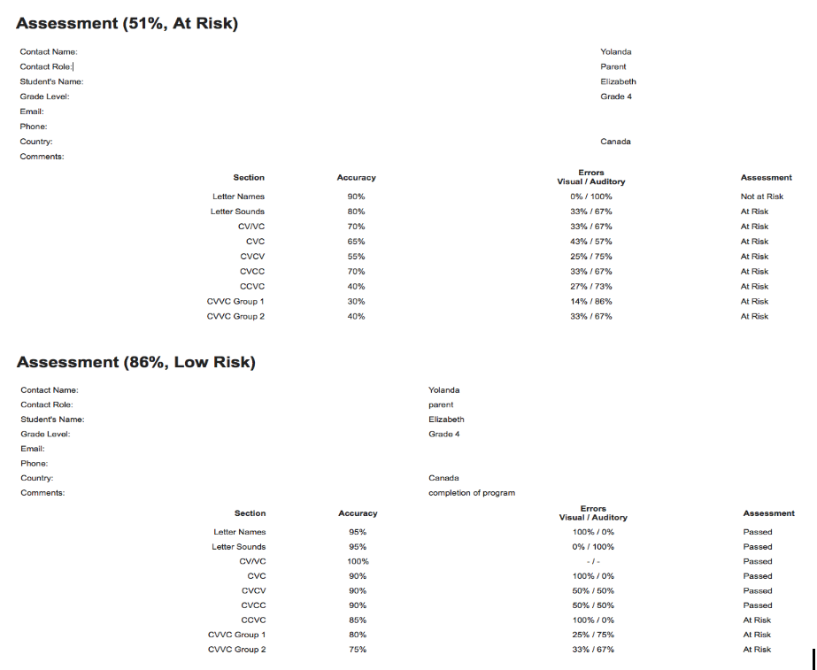
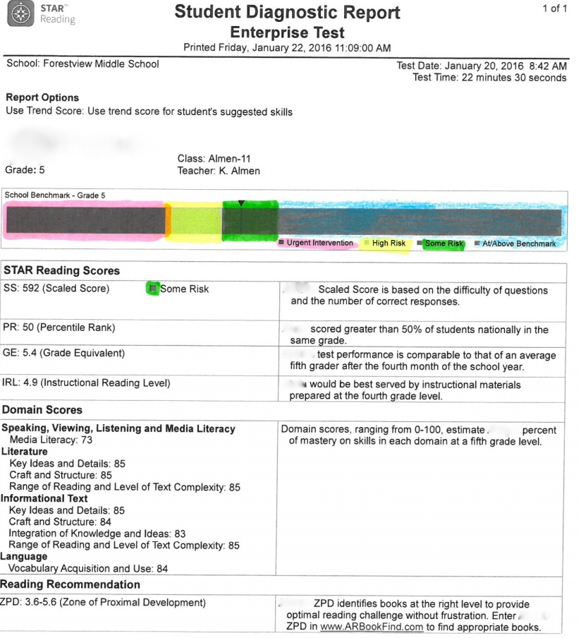
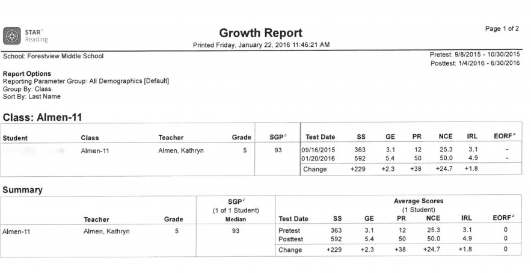

<?xml version="1.0" encoding="UTF-8"?><rss version="2.0"
	xmlns:content="http://purl.org/rss/1.0/modules/content/"
	xmlns:wfw="http://wellformedweb.org/CommentAPI/"
	xmlns:dc="http://purl.org/dc/elements/1.1/"
	xmlns:atom="http://www.w3.org/2005/Atom"
	xmlns:sy="http://purl.org/rss/1.0/modules/syndication/"
	xmlns:slash="http://purl.org/rss/1.0/modules/slash/"
	>

<channel>
	<title>Online Reading Tutor</title>
	<atom:link href="https://compasssoftwareltd.com/feed/" rel="self" type="application/rss+xml" />
	<link>https://compasssoftwareltd.com</link>
	<description>Helping Smart Kids Who Struggle With Reading</description>
	<lastBuildDate>Fri, 26 Apr 2019 14:48:57 +0000</lastBuildDate>
	<language>en-CA</language>
	<sy:updatePeriod>
	hourly	</sy:updatePeriod>
	<sy:updateFrequency>
	1	</sy:updateFrequency>
	<generator>https://wordpress.org/?v=5.2.2</generator>
	<item>
		<title>How Our Brains Are Wired to Read.</title>
		<link>https://compasssoftwareltd.com/how-our-brains-are-wired-to-read/</link>
				<comments>https://compasssoftwareltd.com/how-our-brains-are-wired-to-read/#respond</comments>
				<pubDate>Fri, 26 Apr 2019 14:48:57 +0000</pubDate>
		<dc:creator><![CDATA[Bob Almack]]></dc:creator>
				<category><![CDATA[Installing KVGO]]></category>

		<guid isPermaLink="false">https://compasssoftwareltd.com/?p=3798</guid>
				<description><![CDATA[<p>&#8221; The brain was never meant to read. The fact that anyone can read at all is a miracle.&#8221; ~ Dr Sally Shaywitz. Students with a reading disability, including dyslexia, are not able to access the reading centres in rear left of the brain. Our Orton-Gillingham based lessons develop new neural networks the Word Smith [&#8230;]</p>
<p>The post <a rel="nofollow" href="how-our-brains-are-wired-to-read_2.html">How Our Brains Are Wired to Read.</a> appeared first on <a rel="nofollow" href="index.html">Online Reading Tutor</a>.</p>
]]></description>
								<content:encoded><![CDATA[<p>&#8221; The brain was never meant to read. The fact that anyone can read at all is a miracle.&#8221; ~ Dr Sally Shaywitz.</p>
<p>Students with a reading disability, including dyslexia, are not able to access the reading centres in rear left of the brain. Our Orton-Gillingham based lessons develop new neural networks the Word Smith (left parieto-temporal lobe) and the Automatic Decoder (occipito-temporal lobe). Training is done 5 to 6 days a week in relatively short 20 to 30 minute sessions over several months. Is it easy? Nope! Does it require grit and perseverance? Yes! Will it be worth it? Absolutely! For more info please visit our website or message 1 289 356 5563 or 1 519 816 9472 on WhatsApp. &#8220;Helping Smart Kids Who Struggle With Reading®&#8221; is our passion. We also love working with adults too!</p>
<div id="attachment_3796" style="width: 310px" class="wp-caption alignnone"><p id="caption-attachment-3796" class="wp-caption-text">Reading is a Complex and Completely Unnatural Process </p></div>
<p>The post <a rel="nofollow" href="how-our-brains-are-wired-to-read_2.html">How Our Brains Are Wired to Read.</a> appeared first on <a rel="nofollow" href="index.html">Online Reading Tutor</a>.</p>
]]></content:encoded>
							<wfw:commentRss>https://compasssoftwareltd.com/how-our-brains-are-wired-to-read/feed/</wfw:commentRss>
		<slash:comments>0</slash:comments>
							</item>
		<item>
		<title>Why Can’t My Child Read?</title>
		<link>https://compasssoftwareltd.com/why-cant-my-child-read/</link>
				<comments>https://compasssoftwareltd.com/why-cant-my-child-read/#respond</comments>
				<pubDate>Wed, 03 Apr 2019 01:44:32 +0000</pubDate>
		<dc:creator><![CDATA[Bob Almack]]></dc:creator>
				<category><![CDATA[Dyslexia]]></category>
		<category><![CDATA[auditory processing disorder]]></category>
		<category><![CDATA[dyslexic]]></category>
		<category><![CDATA[learning disability]]></category>
		<category><![CDATA[online reading tutor]]></category>
		<category><![CDATA[reading disability]]></category>

		<guid isPermaLink="false">https://compasssoftwareltd.com/?p=3178</guid>
				<description><![CDATA[<p>What is dyslexia? That is what I asked myself thirteen years ago when I had not even heard of the word, but I was searching for a reason why my daughter presented so many “quirks.” Here is the definition from the International Dyslexia Association: “Dyslexia is a specific learning disability that is neurobiological in origin. [&#8230;]</p>
<p>The post <a rel="nofollow" href="why-cant-my-child-read_2.html">Why Can’t My Child Read?</a> appeared first on <a rel="nofollow" href="index.html">Online Reading Tutor</a>.</p>
]]></description>
								<content:encoded><![CDATA[<p><span style="font-weight: 400;">What is dyslexia? That is what I asked myself thirteen years ago when I had not even heard of the word, but I was searching for a reason why my daughter presented so many “quirks.” Here is the definition from the International Dyslexia Association: </span><i><span style="font-weight: 400;">“Dyslexia is a specific learning disability that is neurobiological in origin. It is characterized by difficulties with accurate and/or fluent word recognition and by poor spelling and decoding abilities. These difficulties typically result from a deficit in the phonological component of language that is often unexpected in relation to other cognitive abilities and the provision of effective classroom instruction. Secondary consequences may include problems in reading comprehension and reduced reading experience that can impede growth of vocabulary and background knowledge.”</span></i></p>
<p><span style="font-weight: 400;">I knew very early on that my daughter was going to have trouble in school. You see, she didn’t start talking until she was three years old and even then her vocabulary was limited to about fifteen words. The children at daycare would always tell the teacher what she wanted. Somehow they understood her, and although I found it amazing and very sweet, I was worried. I sent her to daycare just three days a week for socialization because I thought maybe her speech would improve if she was in a school like environment. It was a great place but very expensive, and unfortunately her speech did not improve. </span></p>
<p><span style="font-weight: 400;">Everyone around me said, “Don’t worry about it, she’s just maturing slower”. I knew in my gut that this was not the case and set out on a discovery solo. I didn’t really have a support system until I enrolled in a Home Instruction Program for Preschool Youngsters. We lived in a rural community, and there was no preschool in our area. </span><span style="font-weight: 400;"> </span><span style="font-weight: 400;">My instructor came every week and noticed my daughter was behind her peers and wasn’t keeping up on the work the instructor assigned, so she tested her. Sure enough, she was behind in almost every subject but scored the highest in the county on building and shapes, so we set about getting her evaluated by a speech and language pathologist. No one told me that language delay was a symptom of dyslexia. </span><span style="font-weight: 400;">According to Decoding Dyslexia Arkansas, The National Health Service, and Dr Sally Shaywitz the following is a comprehensive list of preschool warning signs:</span></p>
<div id="attachment_3180" style="width: 229px" class="wp-caption alignright"><p id="caption-attachment-3180" class="wp-caption-text">Our artistic daughter could not read and was forced to repeat grade one which did not improve her reading.</p></div>
<ul>
<li style="font-weight: 400;"><span style="font-weight: 400;">Delayed speech</span></li>
<li style="font-weight: 400;"><span style="font-weight: 400;">Mixing up sounds and syllables in long words</span></li>
<li style="font-weight: 400;"><span style="font-weight: 400;">Constant confusion of left versus right</span></li>
<li style="font-weight: 400;"><span style="font-weight: 400;">Late establishing dominant hand</span></li>
<li style="font-weight: 400;"><span style="font-weight: 400;">Difficulty learning to tie shoes</span></li>
<li style="font-weight: 400;"><span style="font-weight: 400;">Trouble memorizing his/her address, phone number, or alphabet</span></li>
<li style="font-weight: 400;"><span style="font-weight: 400;">A close relative with dyslexia </span></li>
<li style="font-weight: 400;"><span style="font-weight: 400;">Trouble learning common nursery rhymes, such as “Jack and Jill”</span></li>
<li style="font-weight: 400;"><span style="font-weight: 400;">Difficulty learning and remembering in the alphabet</span></li>
<li style="font-weight: 400;"><span style="font-weight: 400;">Seems unable to recognize letters in his/her own name</span></li>
<li style="font-weight: 400;"><span style="font-weight: 400;">Mispronounces familiar words; persistent “baby talk”</span></li>
<li style="font-weight: 400;"><span style="font-weight: 400;">Doesn’t recognize rhyming patterns such as </span><i><span style="font-weight: 400;">cat, bat, rat</span></i></li>
</ul>
<p><span style="font-weight: 400;">Shaywitz, Sally. </span><i><span style="font-weight: 400;">Overcoming Dyslexia</span></i><span style="font-weight: 400;">. New York: Knopf, 2003. 122.</span></p>
<p><span style="font-weight: 400;">However, my daughter was also a mechanical genius. At the age of three, she knew all the tools my husband needed to work on the car. Our neighbour was absolutely astounded when he was working on his car, and she would hand him the right size bolt when there were many choices. She had her photographs published in the local newspaper, and her art was exceptional for someone her age. (She later became a very talented artist.) She had all these deficits but had some amazing talents as well.</span></p>
<div id="attachment_3182" style="width: 254px" class="wp-caption alignleft"><p id="caption-attachment-3182" class="wp-caption-text"> Our daughter is a talented artist.</p></div>
<p><span style="font-weight: 400;">After a year of delay and incompetence in the “system,” I had her tested, and the diagnosis was expressive and receptive language disorder. I knew something other than speech was wrong, so I</span><span style="font-weight: 400;">went to Arkansas Children’s Hospital for a diagnosis. Her IQ was in the normal range for verbal communication, but in the superior range in the nonverbal category. They diagnosed her with expressive language disorder and suggested speech therapy. My Home Instruction Program for Preschool Youngsters instructor helped again and informed me that the State of Arkansas should pay for it. There were programs available. By that time, my daughter was four years old, and I had been searching for answers for a year, but to tell the truth, I already knew she was different when she was 18 months old and not babbling. She was silent. I became her translator, and it created a bond that still holds to this day. I was her voice.</span></p>
<p>Fortunately I discovered Online Reading Tutor when my daughter was in grade 6. After eight months of tutoring, our daughter was reading at grade level. She is now in grade 10 and on the honour roll in high school.</p>
<p>~ This blog has been written by dyslexia advocate Nancy Colburn, of Arkansas.</p>
<p>&nbsp;</p>
<p>&nbsp;</p>
<p>The post <a rel="nofollow" href="why-cant-my-child-read_2.html">Why Can’t My Child Read?</a> appeared first on <a rel="nofollow" href="index.html">Online Reading Tutor</a>.</p>
]]></content:encoded>
							<wfw:commentRss>https://compasssoftwareltd.com/why-cant-my-child-read/feed/</wfw:commentRss>
		<slash:comments>0</slash:comments>
							</item>
		<item>
		<title>Online Reading Tutor Dyslexia Screener App For Children, Teens and Adults.</title>
		<link>https://compasssoftwareltd.com/dyslexia-screener-app/</link>
				<comments>https://compasssoftwareltd.com/dyslexia-screener-app/#respond</comments>
				<pubDate>Sat, 30 Mar 2019 17:50:43 +0000</pubDate>
		<dc:creator><![CDATA[Bob Almack]]></dc:creator>
				<category><![CDATA[Dyslexia]]></category>
		<category><![CDATA[Reading Fluency]]></category>
		<category><![CDATA[auditory processing disorder]]></category>
		<category><![CDATA[decoding]]></category>
		<category><![CDATA[dyslexic]]></category>
		<category><![CDATA[learning disability]]></category>
		<category><![CDATA[reading disability]]></category>
		<category><![CDATA[reading tutor]]></category>

		<guid isPermaLink="false">https://compasssoftwareltd.com/?p=3120</guid>
				<description><![CDATA[<p>The Online Reading Tutor Dyslexia Screener App screens for dyslexia in under 10 minutes. Parents and educators love it because they can actually see the student’s errors. The App assesses both visual dyslexia (ab / ad) or (ba / ab)  and auditory (dysphonetic) dyslexia ( bu / bi ).  (The author uses the terms visual [&#8230;]</p>
<p>The post <a rel="nofollow" href="dyslexia-screener-app_2.html">Online Reading Tutor Dyslexia Screener App For Children, Teens and Adults.</a> appeared first on <a rel="nofollow" href="index.html">Online Reading Tutor</a>.</p>
]]></description>
								<content:encoded><![CDATA[<p><span style="font-weight: 400;">The Online Reading Tutor Dyslexia Screener App screens for dyslexia in under 10 minutes. Parents and educators love it because they can actually see the student’s errors. The App assesses both visual dyslexia (ab / ad) or (ba / ab)  and auditory (dysphonetic) dyslexia ( bu / bi ).  (The author uses the terms visual dyslexia and auditory dyslexia as defined by Dr Nancy Mather in her book Essentials of Dyslexia)</span></p>
<p><span style="font-weight: 400;">The App uses the fact that dyslexic readers process language more slowly than fluent readers and they read by memory. </span><span style="font-weight: 400;">The App assesses the student’s ability to decode nonsense words (sometimes referred to as pretend words or pseudo words). Non-impaired readers can read nonsense words because of their very good phonological decoding ability. Some examples of some nonsense words are za, az, tulp, blit, pult, laip, and toud. Non-impaired readers can sound out these kinds of words because they can decode the sounds. According to Dr. Sally Shaywitz, </span><i><span style="font-weight: 400;">“The ability to read nonsense words is the best measure of phonological decoding skills in children. The reader literally has to penetrate the sound structure of the word and sound it out, phoneme by phoneme; there is no other way.”</span></i><span style="font-weight: 400;"> (Overcoming Dyslexia, Dr. Shaywitz, 2003, pages 133-134).  </span></p>
<p><span style="font-weight: 400;">The App nonsense words have not been seen before or memorized.  Dyslexics cannot hide behind nonsense words, guessing and hoping they are right.  They either have the decoding skills necessary for decoding or they do not. The student hears a target nonsense word like pud, and then sees 3 choices like dup, pid, pud and must choose the correct one. The type of nonsense words presented as well as the amount of time given to answer the question depends on the student’s grade. In the following App result the grade 4 student can name the alphabet accurately, but his dyslexia is shown by the difficulty linking letters with sound as well as his visual dyslexia (mirror image reversals).  Examples of this student&#8217;s errors are listed beside the score. </span></p>
<h1>Grade 4 dyslexic&#8217;s decoding score.</h1>
<p></p>
<h1>The Dyslexia Screener confirms this adult&#8217;s dyslexia.</h1>
<div id="attachment_3130" style="width: 1487px" class="wp-caption alignnone"><p id="caption-attachment-3130" class="wp-caption-text">The dyslexia screener app confirms this adult&#8217;s dyslexia.</p></div>
<p><span style="font-weight: 400;">Not only are nonsense words used in diagnosing dyslexia, teaching dyslexics to read them is a very effective way to teach decoding.  We use nonsense words to eliminate guessing; there is no way to accurately decode nonsense words if you have to guess. If a student cannot guess the word, they have to use their decoding skills. This forces the student to focus on sounding words out from left to right. Using nonsense words helps wire the  rear left side of the brain and dramatically improves phonological decoding.</span></p>
<p><span style="font-weight: 400;">Our Orton-Gillingham based lessons teaches the student to automatically decode the App nonsense word at over 94% accuracy.  </span><span style="font-weight: 400;">Teaching students to decode nonsense words  is one of the reasons Online Reading Tutor is so effective at teaching dyslexics to read. We teach fluent or automatic decoding skills first using letter names and letter sounds and then seven different types of nonsense words:</span></p>
<ol>
<li style="font-weight: 400;"><span style="font-weight: 400;">cv/vc  examples : ze, ba, da, ux  ( c = consonant, v = vowel)</span></li>
<li style="font-weight: 400;"><span style="font-weight: 400;">cvc examples: zip , poz, pux, baj</span></li>
<li style="font-weight: 400;"><span style="font-weight: 400;">cvcv examples: zune, pupe, dode, bode</span></li>
<li style="font-weight: 400;"><span style="font-weight: 400;">cvcc examples: zemp, bilt, rult, vish,</span></li>
<li style="font-weight: 400;"><span style="font-weight: 400;">ccvc examples:  zlit, plon, druf, clep</span></li>
<li style="font-weight: 400;"><span style="font-weight: 400;">cvvc group 1 examples: zeen, beaz, heek, toam,</span></li>
<li style="font-weight: 400;"><span style="font-weight: 400;">cvvc group 2 examples: zaut, coip, foud, gooz</span></li>
</ol>
<p><span style="font-weight: 400;">The student learns to automatically decode these letter patterns in both our visual match and auditory-visual match decoding lessons. We explain to our students that the key to rapidly and automatically decoding multisyllabic words is to know these nonsense words. Words like homogenous, surreptitious, and automaticity  are all made up of these nonsense words. When decoding becomes automatic, comprehension improves dramatically.</span></p>
<p>We use the App to assess the student&#8217;s learning throughout training.  This student showed significant improvement in her decoding after 30 hours doing our Orton-Gillingham based lessons</p>
<h1>Dyslexia Screener App shows this student&#8217;s decoding improvement.</h1>
<div id="attachment_3123" style="width: 933px" class="wp-caption alignnone"><p id="caption-attachment-3123" class="wp-caption-text">This dyslexic student shows significant gains in reading fluency after 30 hours of Orton-Gillingham based lessons.</p></div>
<p><span style="font-weight: 400;">Use our free Dyslexia Screener App today to find out in under ten minutes if you or your child is at risk of having a specific reading disability including dyslexia.</span></p>
<ul>
<li style="font-weight: 400;"><a href="https://itunes.apple.com/us/app/online-reading-tutor-assessment/id821910943?mt=8"><span style="font-weight: 400;">Online Reading Tutor App for iPhones and iPads (iTunes)</span></a></li>
<li style="font-weight: 400;"><a href="https://play.google.com/store/apps/details?id=com.onlinereadingtutor&amp;hl=en"><span style="font-weight: 400;">Online Reading Tutor App for Android Devices (Google Play)</span></a></li>
</ul>
<p>&nbsp;</p>
<p>&nbsp;</p>
<p>The post <a rel="nofollow" href="dyslexia-screener-app_2.html">Online Reading Tutor Dyslexia Screener App For Children, Teens and Adults.</a> appeared first on <a rel="nofollow" href="index.html">Online Reading Tutor</a>.</p>
]]></content:encoded>
							<wfw:commentRss>https://compasssoftwareltd.com/dyslexia-screener-app/feed/</wfw:commentRss>
		<slash:comments>0</slash:comments>
							</item>
		<item>
		<title>Why Do We Teach Pseudo Word Decoding?</title>
		<link>https://compasssoftwareltd.com/why-do-we-teach-pseudo-word-decoding/</link>
				<pubDate>Fri, 30 Mar 2018 00:16:15 +0000</pubDate>
		<dc:creator><![CDATA[Bob Almack]]></dc:creator>
				<category><![CDATA[Installing KVGO]]></category>

		<guid isPermaLink="false">https://compasssoftwareltd.com/?p=2456</guid>
				<description><![CDATA[<p>The words dog and cat may well be &#8220;read&#8221; by memory requiring no decoding skills. On the other hand, sog, rog and lat, zat must be decoded. Another reason for using pseudo words is that longer multi-syllable words are made up of pseudo word segments. For example, the word entertainment consists of four pseudo words: [&#8230;]</p>
<p>The post <a rel="nofollow" href="why-do-we-teach-pseudo-word-decoding_2.html">Why Do We Teach Pseudo Word Decoding?</a> appeared first on <a rel="nofollow" href="index.html">Online Reading Tutor</a>.</p>
]]></description>
								<content:encoded><![CDATA[<p>The words dog and cat may well be &#8220;read&#8221; by memory requiring no decoding skills. On the other hand, sog, rog and lat, zat must be decoded. Another reason for using pseudo words is that longer multi-syllable words are made up of pseudo word segments. For example, the word entertainment consists of four pseudo words: en (cv,) ter (cvc), tain (cvvc), ment (cvcc) .<br />
Of course, one must be careful in selecting pseudo words. &#8220;Qib&#8221; would be a poor choice whereas &#8220;quab&#8221; would <span class="text_exposed_show">be acceptable.</span></p>
<div class="text_exposed_show">
<p>Once pseudo words are mastered, fluency in similar real words is much easier to achieve. The student is then ready to move on to more complex, multi-syllable, grade level vocabulary.<br />
We have helped hundreds of dyslexics improve their reading, and learning rapid, automatic pseudo word decoding skills is a crucial part of their success.</p>
<p></p>
</div>
<p>The post <a rel="nofollow" href="why-do-we-teach-pseudo-word-decoding_2.html">Why Do We Teach Pseudo Word Decoding?</a> appeared first on <a rel="nofollow" href="index.html">Online Reading Tutor</a>.</p>
]]></content:encoded>
										</item>
		<item>
		<title>The Impact of Dyslexia on Self-Esteem</title>
		<link>https://compasssoftwareltd.com/the-impact-of-dyslexia-on-self-esteem/</link>
				<pubDate>Sun, 04 Mar 2018 03:27:54 +0000</pubDate>
		<dc:creator><![CDATA[Bob Almack]]></dc:creator>
				<category><![CDATA[Dyslexia]]></category>

		<guid isPermaLink="false">https://compasssoftwareltd.com/?p=2445</guid>
				<description><![CDATA[<p>Dyslexia can lead to low self-esteem. The lasting effects of reading disabilities have been documented  for years.  Because these disabilities can persist into adulthood,  children and adolescents with reading problems often develop low self esteem due to repeated failures. &#8220;A review of research on self-concept indicates that learning disabled children consistently rate themselves lower than [&#8230;]</p>
<p>The post <a rel="nofollow" href="the-impact-of-dyslexia-on-self-esteem_2.html">The Impact of Dyslexia on Self-Esteem</a> appeared first on <a rel="nofollow" href="index.html">Online Reading Tutor</a>.</p>
]]></description>
								<content:encoded><![CDATA[<p>Dyslexia can lead to low self-esteem. The lasting effects of reading disabilities have been documented  for years.  Because these disabilities can persist into adulthood,  children and adolescents with reading problems often develop low self esteem due to repeated failures. &#8220;A review of research on self-concept indicates that learning disabled children consistently rate themselves lower than their non-disabled peers in academic domains.&#8221; (Beitchman and Young, 1998, p.84). According to Dr. Sally Shaywitz, dyslexia researcher at Yale, dyslexia amounts to an attack on self-esteem.</p>
<p>Even successful adults with dyslexia recall how the struggle to succeed in school left them feeling stupid. Philip Schultz, the father of a dyslexic child, did not discover his own dyslexia until his son was diagnosed.   According to this Pulitzer Prize winning poet   “Dyslexia invokes scorn and repulsion from even those suffering it. . . . Dyslexia is a disability that pleads for pardon and forgiveness,”(Schultz, 2011, pp. 50-51). Ed Baines, another dyslexic author (and restaurateur/TV chef) remembers, “When you are dyslexic, you are often told, ‘You’re a failure. You won’t be able to do it&#8217; &#8221; (Baines, 2016, p. 32 ).</p>
<p>References:</p>
<p>Beitchman, Joseph H and Young, Arlene R (1998), Learning Disorders With a Special Emphasis on Reading Disorders: A Review of the Past 10 Years.<em> Reviews in Child and Adolescent Psychiatry </em>78-89</p>
<p>Baines, Ed (2016) in Rooke, Margaret (Ed.), <em>Creative Successful Dyslexic: 23 High Achievers Share Their Stories,</em> London:  Jessica Kingsley</p>
<p>Schultz,J Philip (2011)<em>, My Dyslexia</em>,   New York: WW Norton</p>
<p>Shaywitz, Sally E (2005),<em> Overcoming Dyslexia: A New and Complete Science-based Program for Reading Problems at Any Level </em>  New York: Random House</p>
<p>Thank you to Dr Clair Hinckley for contributing this article.</p>
<p></p>
<p>The post <a rel="nofollow" href="the-impact-of-dyslexia-on-self-esteem_2.html">The Impact of Dyslexia on Self-Esteem</a> appeared first on <a rel="nofollow" href="index.html">Online Reading Tutor</a>.</p>
]]></content:encoded>
										</item>
		<item>
		<title>An example of visual dyslexia.</title>
		<link>https://compasssoftwareltd.com/an-example-of-visual-dyslexia/</link>
				<comments>https://compasssoftwareltd.com/an-example-of-visual-dyslexia/#respond</comments>
				<pubDate>Tue, 24 Oct 2017 20:14:02 +0000</pubDate>
		<dc:creator><![CDATA[Bob Almack]]></dc:creator>
				<category><![CDATA[Reading Fluency]]></category>
		<category><![CDATA[Dyslexia]]></category>
		<category><![CDATA[dyslexic]]></category>
		<category><![CDATA[online reading tutor]]></category>
		<category><![CDATA[online tutor dyslexia]]></category>
		<category><![CDATA[specific reading disability]]></category>

		<guid isPermaLink="false">https://compasssoftwareltd.com/?p=1724</guid>
				<description><![CDATA[<p>From a Grandma in PA,  &#8220;Smile for the day&#8230; Two VERY loveable and loving children (who just happen to be dyslexic) proudly hung a beautiful sign for their Grandma’s birthday yesterday…and found it to be perfectly oriented and readable!&#8221; Fortunately, the Online Reading Tutor decoding lessons corrects mirror image reversals or visual dyslexia. For more [&#8230;]</p>
<p>The post <a rel="nofollow" href="an-example-of-visual-dyslexia_2.html">An example of visual dyslexia.</a> appeared first on <a rel="nofollow" href="index.html">Online Reading Tutor</a>.</p>
]]></description>
								<content:encoded><![CDATA[<p>From a Grandma in PA,  &#8220;Smile for the day&#8230; Two VERY loveable and loving children (who just happen to be dyslexic) proudly hung a beautiful sign for their Grandma’s birthday yesterday…and found it to be perfectly oriented and readable!&#8221; Fortunately, the Online Reading Tutor decoding lessons corrects mirror image reversals or visual dyslexia. For more on visual dyslexia read Dr Stanislas Dehaene&#8217;s book &#8220;Reading In The Brain&#8221; The following is an excerpt: <span style="font-weight: 400;">&#8220;</span><i><span style="font-weight: 400;">In everyday language, a dyslexic is someone who confuses left and right and makes mirror errors in reading. Symmetry perception plays a significant role in reading , but left-right confusions are not unique to dyslexics. Early in life virtually all children make mirror errors in reading and writing. Indeed the ability to generalize across symmetrical views, which facilitates view-variant object recognition, is one of the essential competencies of the visual system. </span></i><i>When children learn to read, they must &#8220;unlearn&#8221; mirror generalization in order to process &#8220;b&#8221; and &#8220;d&#8221; as distinct letters.</i> <i>In some children, this unlearning process, which goes against the spontaneous abilities inherited from evolution seems to present a specific source of impairment&#8221;  ~ Dr Stanislas Dehaene <span style="text-decoration: underline;">&#8220;Reading In The Brain&#8221;</span>, page 298 </i></p>
<p>&nbsp;</p>
<div id="attachment_1725" style="width: 347px" class="wp-caption alignnone"><p id="caption-attachment-1725" class="wp-caption-text">Two dyslexic grandchildren post Happy Birthday!</p></div>
<p>The post <a rel="nofollow" href="an-example-of-visual-dyslexia_2.html">An example of visual dyslexia.</a> appeared first on <a rel="nofollow" href="index.html">Online Reading Tutor</a>.</p>
]]></content:encoded>
							<wfw:commentRss>https://compasssoftwareltd.com/an-example-of-visual-dyslexia/feed/</wfw:commentRss>
		<slash:comments>0</slash:comments>
							</item>
		<item>
		<title>Could your child be at risk for dyslexia?</title>
		<link>https://compasssoftwareltd.com/could-your-child-be-at-risk-for-dyslexia/</link>
				<comments>https://compasssoftwareltd.com/could-your-child-be-at-risk-for-dyslexia/#respond</comments>
				<pubDate>Sat, 14 Oct 2017 19:31:52 +0000</pubDate>
		<dc:creator><![CDATA[Bob Almack]]></dc:creator>
				<category><![CDATA[Dyslexia]]></category>
		<category><![CDATA[Reading Fluency]]></category>
		<category><![CDATA[auditory processing disorder]]></category>
		<category><![CDATA[Dr Sally Shaywitz]]></category>
		<category><![CDATA[learning disability]]></category>
		<category><![CDATA[online dyslexia tutor]]></category>
		<category><![CDATA[online reading tutor]]></category>
		<category><![CDATA[reading tutor]]></category>

		<guid isPermaLink="false">https://compasssoftwareltd.com/?p=1817</guid>
				<description><![CDATA[<p>Signs of dyslexia in different age groups: Online Reading Tutor App for iPhones and iPads (iTunes) Online Reading Tutor App for Android Devices (Google Play) &#160;</p>
<p>The post <a rel="nofollow" href="could-your-child-be-at-risk-for-dyslexia_2.html">Could your child be at risk for dyslexia?</a> appeared first on <a rel="nofollow" href="index.html">Online Reading Tutor</a>.</p>
]]></description>
								<content:encoded><![CDATA[<p>Signs of dyslexia in different age groups:</p>
<div id="attachment_1808" style="width: 810px" class="wp-caption alignleft"><p id="caption-attachment-1808" class="wp-caption-text">Could your child be at risk for dyslexia? Screen them for free using our Dyslexia Test App.  Takes less than 10 minutes.</p></div>
<ul>
<li><a title="Online Reading Tutor" href="https://itunes.apple.com/us/app/online-reading-tutor-assessment/id821910943?mt=8" target="_blank">Online Reading Tutor App for iPhones and iPads (iTunes)</a></li>
<li><a title="Online Reading Tutor" href="https://play.google.com/store/apps/details?id=com.onlinereadingtutor&amp;hl=en" target="_blank">Online Reading Tutor App for Android Devices (Google Play)</a></li>
</ul>
<p>&nbsp;</p>
<p>The post <a rel="nofollow" href="could-your-child-be-at-risk-for-dyslexia_2.html">Could your child be at risk for dyslexia?</a> appeared first on <a rel="nofollow" href="index.html">Online Reading Tutor</a>.</p>
]]></content:encoded>
							<wfw:commentRss>https://compasssoftwareltd.com/could-your-child-be-at-risk-for-dyslexia/feed/</wfw:commentRss>
		<slash:comments>0</slash:comments>
							</item>
		<item>
		<title>An Example Of The Creative Gifts Of Dyslexia</title>
		<link>https://compasssoftwareltd.com/an-example-of-the-creative-gifts-of-dyslexia/</link>
				<comments>https://compasssoftwareltd.com/an-example-of-the-creative-gifts-of-dyslexia/#respond</comments>
				<pubDate>Sun, 01 Oct 2017 19:40:29 +0000</pubDate>
		<dc:creator><![CDATA[Bob Almack]]></dc:creator>
				<category><![CDATA[Dyslexia]]></category>
		<category><![CDATA[decoding]]></category>
		<category><![CDATA[Dr Sally Shaywitz]]></category>
		<category><![CDATA[dyslexia test]]></category>
		<category><![CDATA[dyslexic]]></category>
		<category><![CDATA[learning diability]]></category>
		<category><![CDATA[online reading tutor]]></category>
		<category><![CDATA[reading comprehension]]></category>
		<category><![CDATA[reading tutor]]></category>

		<guid isPermaLink="false">https://compasssoftwareltd.com/?p=1717</guid>
				<description><![CDATA[<p>I had the pleasure of speaking with Orlando Cotto who you will see is a talented and creative musician. He contacted me through the Online Reading Tutor Assessment App. While not all dyslexics are creative musicians, they all have special gifts. The good news  is that dyslexic children and adults can become fluent readers. Passionate [&#8230;]</p>
<p>The post <a rel="nofollow" href="an-example-of-the-creative-gifts-of-dyslexia_2.html">An Example Of The Creative Gifts Of Dyslexia</a> appeared first on <a rel="nofollow" href="index.html">Online Reading Tutor</a>.</p>
]]></description>
								<content:encoded><![CDATA[<p>I had the pleasure of speaking with Orlando Cotto who you will see is a talented and creative musician. He contacted me through the Online Reading Tutor Assessment App. While not all dyslexics are creative musicians, they all have special gifts. The good news  is that dyslexic children and adults can become fluent readers. Passionate tutors supporting frequent training (four to five days a week) with evidenced-based Orton-Gillingham software is the key.</p>
<p><iframe width="1080" height="608" src="https://www.youtube.com/embed/lTwQqZTFubU?feature=oembed" frameborder="0" gesture="media" allowfullscreen></iframe></p>
<p>The post <a rel="nofollow" href="an-example-of-the-creative-gifts-of-dyslexia_2.html">An Example Of The Creative Gifts Of Dyslexia</a> appeared first on <a rel="nofollow" href="index.html">Online Reading Tutor</a>.</p>
]]></content:encoded>
							<wfw:commentRss>https://compasssoftwareltd.com/an-example-of-the-creative-gifts-of-dyslexia/feed/</wfw:commentRss>
		<slash:comments>0</slash:comments>
							</item>
		<item>
		<title>STAR™ Pre and Post Reading Assessment proves Online Reading Tutor&#8217;s Efficacy for Grade 5 Dyslexic</title>
		<link>https://compasssoftwareltd.com/star-pre-and-post-reading-assessment-proves-online-reading-tutors-efficacy-for-grade-5-dyslexic-2/</link>
				<comments>https://compasssoftwareltd.com/star-pre-and-post-reading-assessment-proves-online-reading-tutors-efficacy-for-grade-5-dyslexic-2/#respond</comments>
				<pubDate>Thu, 10 Mar 2016 15:28:28 +0000</pubDate>
		<dc:creator><![CDATA[Bob Almack]]></dc:creator>
				<category><![CDATA[General]]></category>

		<guid isPermaLink="false">https://compasssoftwareltd.com/?p=1707</guid>
				<description><![CDATA[<p>&#160; &#8220;I just wanted to say thanks for helping my daughter learn to read better. Best money I&#8217;ve spent. She took her  STAR™ reading test at school in September 2015 and her reading level was a 3.1. She took another STAR™ reading assessment on January 20th 2016 and she tested at a 5.4 reading level. I attached her test [&#8230;]</p>
<p>The post <a rel="nofollow" href="star-pre-and-post-reading-assessment-proves-online-reading-tutors-efficacy-for-grade-5-dyslexic-2_2.html">STAR™ Pre and Post Reading Assessment proves Online Reading Tutor&#8217;s Efficacy for Grade 5 Dyslexic</a> appeared first on <a rel="nofollow" href="index.html">Online Reading Tutor</a>.</p>
]]></description>
								<content:encoded><![CDATA[<p>&nbsp;</p>
<p><em>&#8220;I just wanted to say thanks for helping my daughter learn to read better. Best money I&#8217;ve spent. </em><em>She took her  STAR reading test at school in September 2015 and her reading level was a 3.1. </em><em>She took another STAR reading assessment on January 20th 2016 and she tested at a 5.4 reading level. </em><em>I attached her test records for you to see if you&#8217;d like. Feel free to use it as you&#8217;d like. Please just remove her last name if you use it for the public. Thanks. She has now read 2 books at 5th grade reading level that were worth 3 AR reading points and she aced the comprehension test on both. I have given your website to a friend. Her daughter&#8217;s name is Ella. She goes to school with Eleanor.  Eleanor&#8217;s teacher was also very interested. I gave her the info too. Before Online Reading Tutor, our daughter would cry every night when she tried to read. Now, she reads for pleasure. &#8220;</em> ~ Danielle Nacey, Minnesota</p>
<p></p>
<div id="attachment_1710" style="width: 893px" class="wp-caption alignleft"><p id="caption-attachment-1710" class="wp-caption-text">The independent STAR reading  assessment proves Online Reading Tutor&#8217;s efficacy. This grade 5 dyslexic improved 2.3 grade levels in four months.</p></div>
<p>&nbsp;</p>
<p>The post <a rel="nofollow" href="star-pre-and-post-reading-assessment-proves-online-reading-tutors-efficacy-for-grade-5-dyslexic-2_2.html">STAR™ Pre and Post Reading Assessment proves Online Reading Tutor&#8217;s Efficacy for Grade 5 Dyslexic</a> appeared first on <a rel="nofollow" href="https://compasssoftwareltd.com/feed/index.html">Online Reading Tutor</a>.</p>
]]></content:encoded>
							<wfw:commentRss>https://compasssoftwareltd.com/star-pre-and-post-reading-assessment-proves-online-reading-tutors-efficacy-for-grade-5-dyslexic-2/feed/</wfw:commentRss>
		<slash:comments>0</slash:comments>
							</item>
		<item>
		<title>A mother of grade 3 dyslexic writes from Michigan</title>
		<link>https://compasssoftwareltd.com/a-mother-of-grade-3-dyslexic-writes-from-michigan/</link>
				<comments>https://compasssoftwareltd.com/a-mother-of-grade-3-dyslexic-writes-from-michigan/#respond</comments>
				<pubDate>Wed, 21 Oct 2015 18:37:44 +0000</pubDate>
		<dc:creator><![CDATA[Bob Almack]]></dc:creator>
				<category><![CDATA[General]]></category>

		<guid isPermaLink="false">https://compasssoftwareltd.com/?p=1678</guid>
				<description><![CDATA[<p>&#8220;I just wanted to tell you thank you for all your work this summer. Dade has moved up two levels since the start of the school year and finally enjoying reading. I know it&#8217;s credited to the program and the help you provided. Thanks again!&#8221;  ~ Kim Monkevich</p>
<p>The post <a rel="nofollow" href="https://compasssoftwareltd.com/feed/a-mother-of-grade-3-dyslexic-writes-from-michigan_2.html">A mother of grade 3 dyslexic writes from Michigan</a> appeared first on <a rel="nofollow" href="https://compasssoftwareltd.com/feed/index.html">Online Reading Tutor</a>.</p>
]]></description>
								<content:encoded><![CDATA[<div>&#8220;I just wanted to tell you thank you for all your work this summer. Dade has moved up two levels since the start of the school year and finally enjoying reading. I know it&#8217;s credited to the program and the help you provided. Thanks again!&#8221;  ~ Kim Monkevich</div>
<p>The post <a rel="nofollow" href="https://compasssoftwareltd.com/feed/a-mother-of-grade-3-dyslexic-writes-from-michigan_2.html">A mother of grade 3 dyslexic writes from Michigan</a> appeared first on <a rel="nofollow" href="https://compasssoftwareltd.com/feed/index.html">Online Reading Tutor</a>.</p>
]]></content:encoded>
							<wfw:commentRss>https://compasssoftwareltd.com/a-mother-of-grade-3-dyslexic-writes-from-michigan/feed/</wfw:commentRss>
		<slash:comments>0</slash:comments>
							</item>
	</channel>
</rss>
